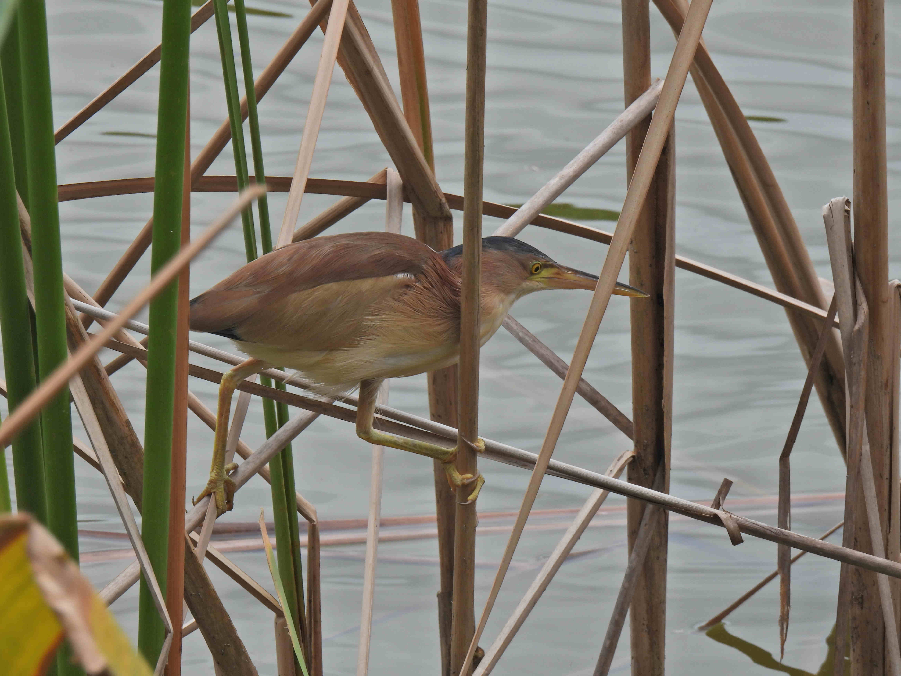
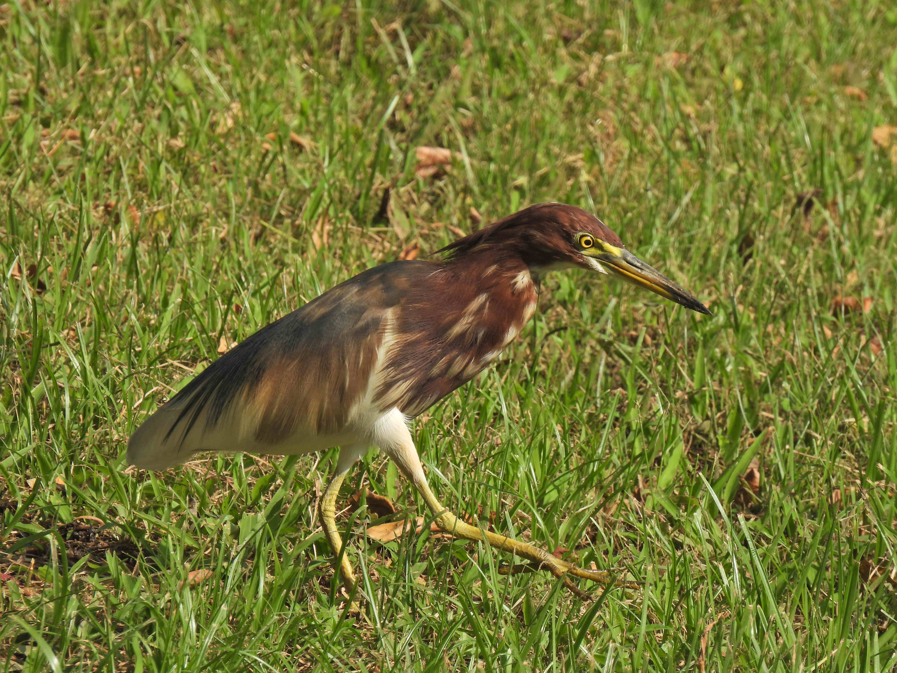
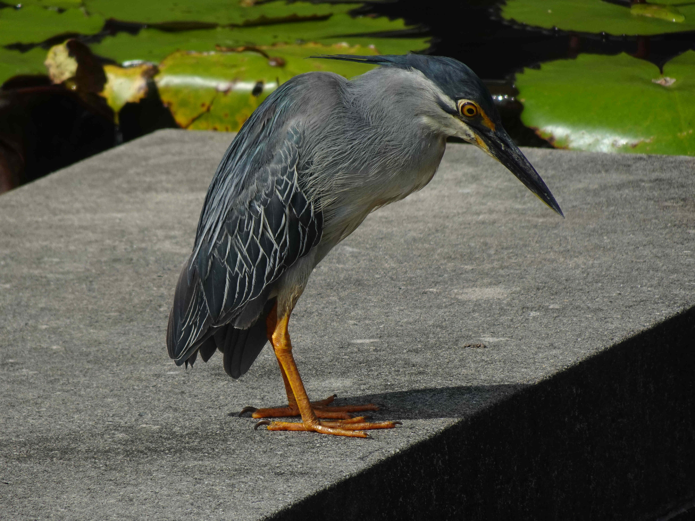
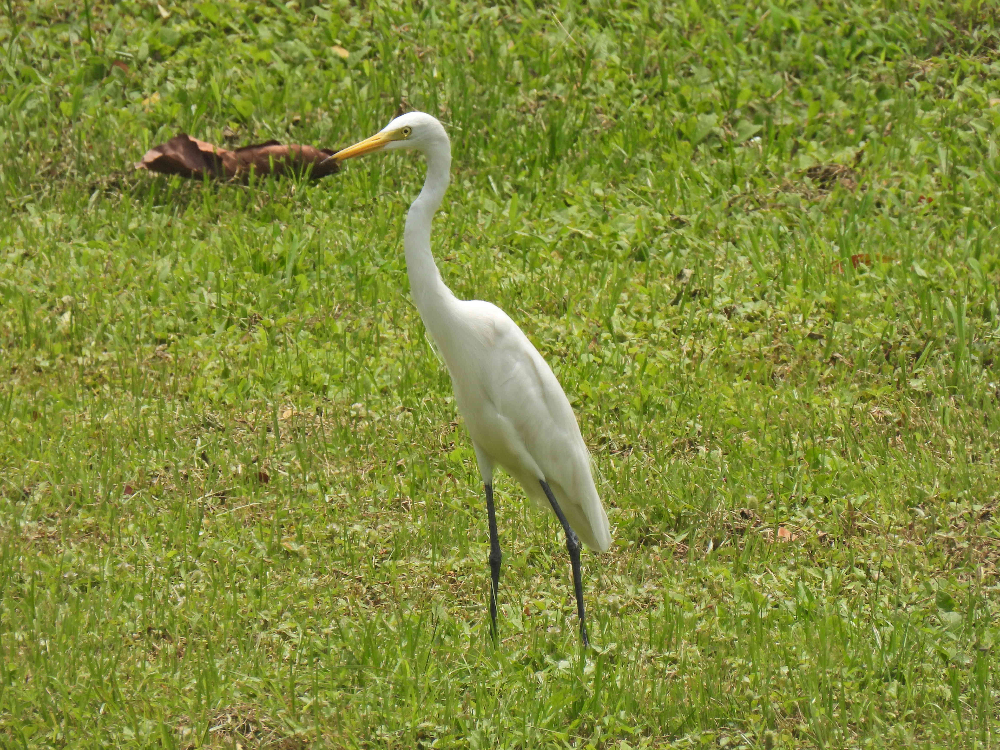

Pierre Alquier
ESSEC Business School - ASIA PACIFIC - Professor of Statistics
鷺
I replaced my page on the herons of Tokyo by a new page on the herons of Singapore. The herons of Tokyo are still online: Herons of Tokyo, as well as some videos on my YouTube Channel. Please don't hesitate to contact me if you know good places to meet herons!
Javan pond heron - ジャワアカガシラサギ

Purple heron - ムラサキサギ
With a little egret:

Yellow bittern - ヨシゴイ

Grey heron - アオサギ
With a yellow bittern:
Chinese pond heron - アカガシラサギ

Great billed heron - スマトラサギ
Little egret - コサギ
Striated heron - ササゴイ



Black-crowned night heron - ゴイサギ
For better photos of the black-crowned night heron, see my page about the Herons of Tokyo, where it is more common... I really hope I can take better photos of this bird in the future in Singapore.
Malayan night heron - ズグロミゾゴイ
A legendary pokemon... I hope I can get better photos someday, but already consider myself very lucky for meeting this bird once!
Great egret - ダイサギ
Cattle egret - アマサギ
Cinnamon bittern - リュウキュウヨシゴイ
Intermediate egret - チュウサギ
